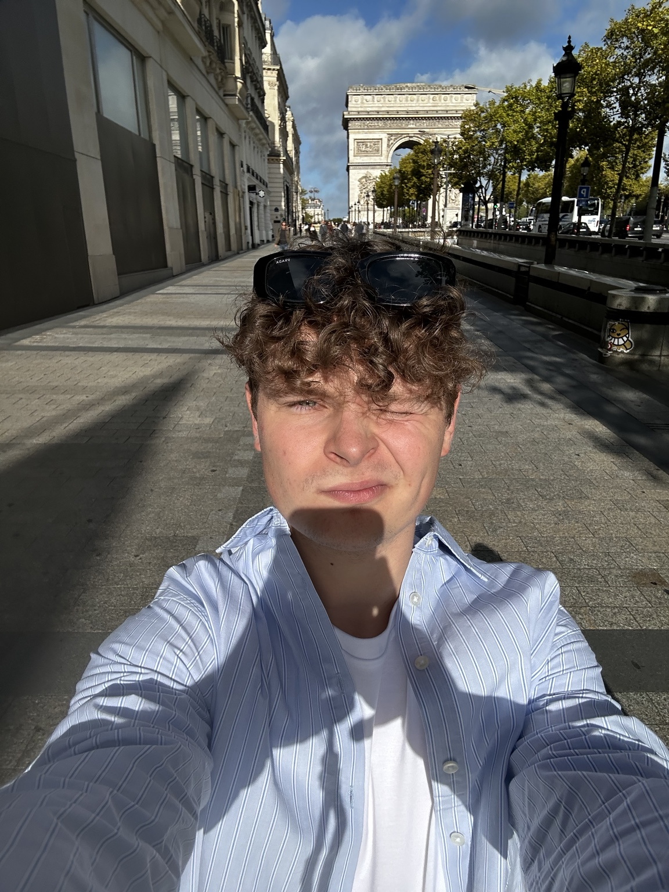

Korepetycje z matematyki
Korepetycje online dla szkoły podstawowej i liceum. Spokojne tłumaczenie, przygotowanie do sprawdzianów i pomoc krok po kroku.
Oferta
Pomoc z bieżącym materiałem, kartkówkami, sprawdzianami i nadrabianiem zaległości.
Matematyka krok po kroku — od podstaw po trudniejsze zagadnienia.
Przygotowanie do matury, arkusze, schematy zadań i strategie rozwiązywania.
O mnie
Cześć, jestem studentem Automatyki i Robotyki i prowadzę korepetycje z matematyki online dla szkoły podstawowej oraz liceum.
Na zajęciach skupiam się przede wszystkim na zrozumieniu materiału krok po kroku — bez stresu, chaosu i uczenia się na pamięć.
Pomagam w przygotowaniu do sprawdzianów, kartkówek oraz matury podstawowej.

Jak wyglądają zajęcia
Tłumaczę krok po kroku bez presji i przeskakiwania między tematami.
Nie tylko pokazuję rozwiązania — uczymy się myślenia i schematów.
Skupiamy się na zadaniach, które realnie pojawiają się w szkole.
Opinie
„W końcu zacząłem rozumieć matematykę, a nie tylko uczyć się schematów.”
„Bardzo spokojne tłumaczenie i dużo cierpliwości. Przed sprawdzianem wszystko było jasne.”
„Świetna atmosfera na zajęciach i konkretne przygotowanie do matury.”
Kontakt
Napisz wiadomość i ustalimy dogodny termin oraz zakres materiału.
Pierwsza wiadomość nic nie kosztuje — możesz po prostu zapytać o terminy lub materiał.